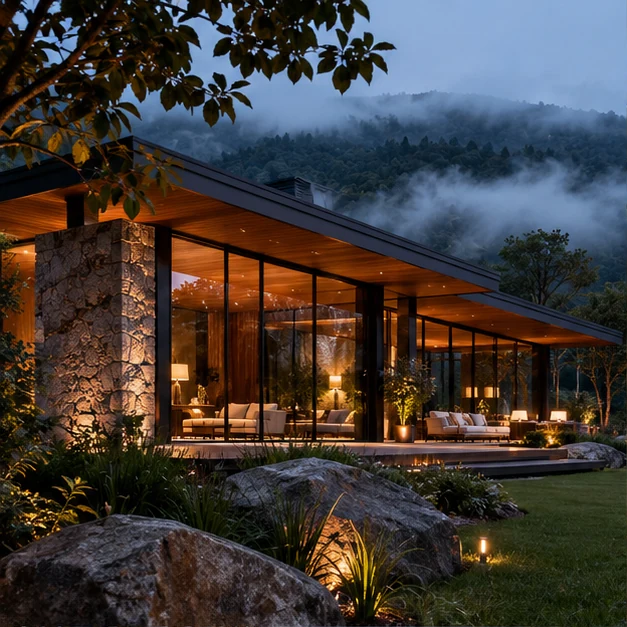
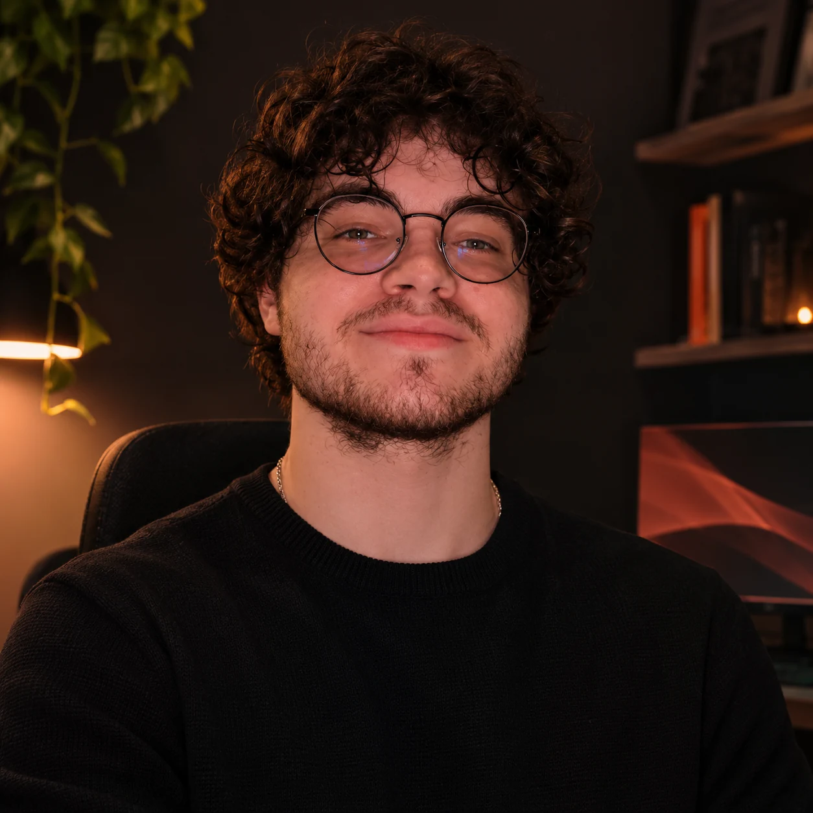

Ver projeto ↗Portfólio independenteWeb design / 2026
Gabriel Basso — Web DesignerSites com presença.
Experiências com personalidade.
Crio experiências digitais que unem identidade, clareza e movimento. Websites pensados para serem sentidos, explorados e lembrados.

Design que expressaideias com intenção.01 — CRIAR COM IDENTIDADE
↓ Role para descobrirDisponível para novos projetos ↗
01 / Trabalho selecionadoQuatro mundos.
Quatro mundos.
Quatro maneiras de criar.
Estudos conceituais completos, criados para explorar diferentes desafios, estilos e formas de interação. Cada projeto possui seu próprio website navegável.

02 / Sobre mim
O digital pode ser
mais humano.
Sou Gabriel Basso, Web Designer. Gosto de encontrar o ponto em que a estética e a funcionalidade deixam de competir — e passam a contar a mesma história.
Acredito em interfaces que tenham motivo para existir: uma navegação intuitiva, uma imagem que diz alguma coisa, uma transição que dá ritmo à experiência. Este portfólio apresenta minha abordagem por meio de quatro projetos conceituais.
03 / O que posso criarForma, função
Forma, função
e propósito.
Da primeira impressão ao último clique, cada elemento deve trabalhar pela experiência do visitante.
01
Websites institucionais
Presença digital clara, confiável e feita para representar seu negócio.
02
Landing pages
Páginas objetivas, com informação organizada e foco em conversão.
03
Redesign de websites
Evolução visual e funcional de experiências digitais existentes.
04
UI/UX para websites
Fluxos, arquitetura e interfaces orientadas à experiência.
05
Design responsivo
Experiências adaptadas a diferentes telas e modos de interação.
06
Experiências interativas
Movimento e interatividade a serviço do conteúdo e da marca.
04 / Processo criativoBoas experiências
Boas experiências
não acontecem por acaso.
Um processo de trabalho sugerido para transformar objetivos em decisões visuais consistentes.
01
Descoberta
Entender o negócio, a audiência e o objetivo do site.
02
Direção criativa
Explorar referências, conceito visual e linguagem da marca.
03
Estrutura e UX
Organizar conteúdo, navegação e jornadas importantes.
04
Design e construção
Transformar direção e estrutura em uma experiência real.
05
Refinamento
Revisar responsividade, acessibilidade e detalhes de entrega.
05 / ContatoTem uma ideia?
Tem uma ideia?
Vamos dar forma.
Uma boa conversa é o primeiro passo. Me conte sobre o que você gostaria de construir.